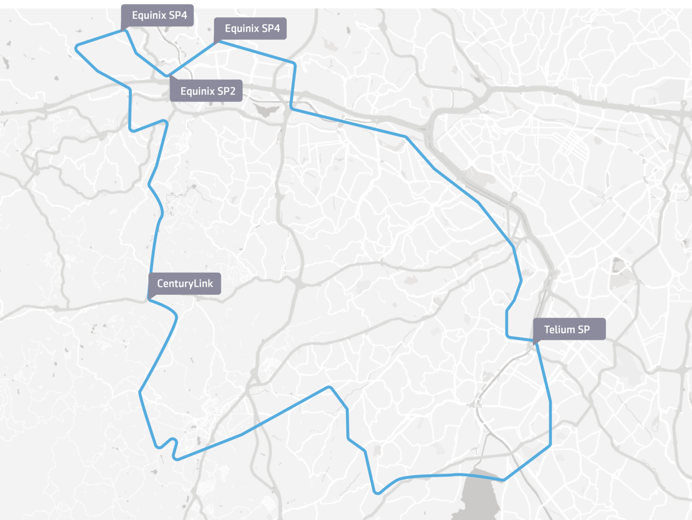

Sobre a Telecall
A Telecall é uma operadora de telecomunicações brasileira que oferece a seus clientes o mais alto padrão de qualidade, velocidade e acessibilidade em soluções de comunicação. Serviços que incluem uma ampla gama de valores agregados, oferecendo aos clientes operações mais produtivas, inovadoras e eficazes. Com mais de 20 anos de experiência na indústria global, a Telecall hoje é sinônimo de qualidade e eficiência.
Missão
Garanta os melhores serviços e custos otimizados para sua empresa, com toda mobilidade e segurança que só a Telecall oferece para você no mercado.
Visão
Ser reconhecida pela busca constante em soluções de comunicações diferenciadas com mobilidade e ajudando na produtividade das empresas.
Valores
Nosso valores representam a base do desenvolvimento do nosso negócio.
- Equipe, somos um time de elos fortes.
- Ética e respeito no ambiente pessoal e profissional.
- Faça o que goste e tenha foco.
- Comprometa-se e entregue o prometido.
- Senso de urgência e de importância.
- Temos como base nosso DNA e pilares, inspire-se neles.
- Fazer mais e melhor com menos.
- Busca de desenvolvimento pessoal e profissional.
- Respeito pelo presente e pelo próximo observando sempre o crescimento sustentável.
- Surpreenda o cliente, a si mesmo e, a nossa equipe.
Presença Mundial

Fibra Telecall no Rio de Janeiro

Fibra Telecall em São Paulo
